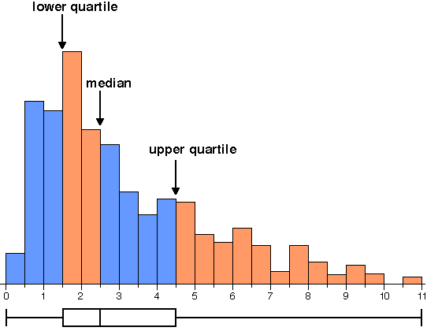

Five-number summary
The distribution of values in many data sets can be effectively summarised by a few numerical values called summary statistics. In this section we describe a graphical display that is based on five summary statistics called the 5-number summary.
- The two extremes of the batch (i.e. the minimum and maximum values).
- Three other values that split the batch into groups with (as closely as possible) equal numbers of values (the lower quartile, the median and the upper quartile).
Box plot
The box plot of a batch of values displays these five values graphically.
A box plot therefore splits the data set into four quarters with (approximately) equal numbers of values.
The diagram below shows a batch of values as a jittered dot plot and a box plot.
Click on the different parts of the box plot to display the proportion of values in the batch in the different intervals, and to verify that the box plot does indeed split the batch into quarters.
Details
We have skipped over some details in our description of the median and quantiles. You should usually rely on a computer to evaluate the median and quartiles, so a precise definition is not strictly necessary. The idea of splitting the data into 4 equal-sized groups allows you to interpret the shape of box plots.
(For further details, see the General Version of CAST for Students.)
Box plots and histograms
It is instructive to consider how the median and quartiles relate to a histogram of a data set.

The data set is split into quarters by the median and quartiles, so each section of the box plot contains equal numbers of data values and therefore has relative frequency 1/4. Since histogram area is proportional to relative frequency, the median and quartiles split the histogram into four equal areas.
Although this result does not hold exactly if the median and quartiles do not coincide with class boundaries, the median and quartiles always approximately split a histogram into equal areas.
The diagram below shows the box plot of a symmetric distribution under the corresponding histogram.
Use the pop-up menu to change the shape of the underlying distribution. Observe that the histogram is split into four equal areas, corresponding to the median and quartiles of the distribution, and therefore the sections of the box plot.
Change the extremes, median and quartiles by dragging them on the diagram. Observe how the histogram shape reflects their values — when any two are close together, the density must be high (since the corresponding histogram area is always a quarter of the total area.
What does a box plot tell you about the distribution?
- Centre
- The vertical line inside the box (the median) gives an indication of the centre of the distribution.
- Spread
- The width of the box (the interquartile range) gives an indication of the spread of values in the distribution.
- Shape
- High density corresponds to adjacent box plot values being close together. In particular, if the extreme and quartile on one side are closer to the median than the extreme and quartile on the other side, this shows that the distribution is skew.
The diagram below shows the jittered dot plot and box plot of a batch of 100 values.
- Use the Centre slider to observe how the box plot shows
the 'centre' of the distribution of values.
- Use the Spread slider to observe how the box plot shows
the spread of values in the data.
- Return the Spread slider to its maximum, then investigate
the effect of the Skewness slider. For example, a high
density to the left of the distribution and a long tail to the right results
in the lower extreme and quartile being close to the median.
- With the Spread slider at its maximum and the Skewness slider in the middle, investigate the effect of the Tails slider. Moving this slider to the right concentrates values in the centre of the distribution, so the tails of the box plot become relatively longer.
From any box plot, you should now have a reasonable impression of the distribution of values, and should be able to sketch the corresponding histogram.